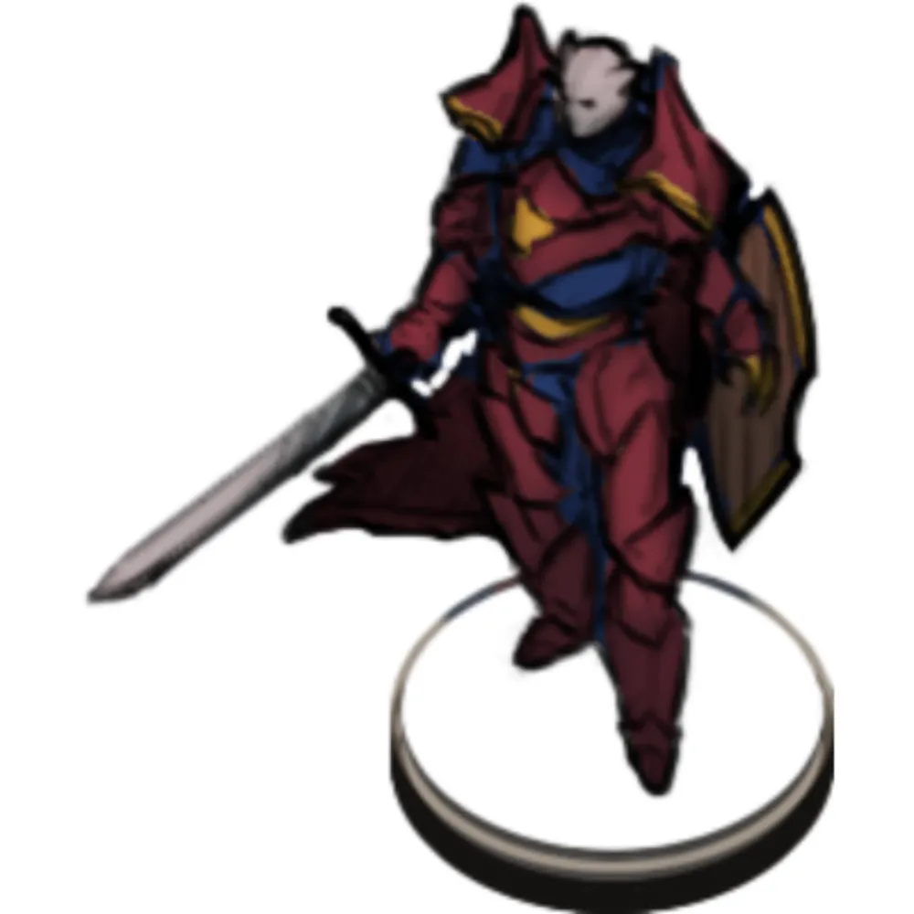

나라는 공국 수준으로 작을진 몰라도 그만큼의 엄중한 일이겠습니다ㅓ
혹시 가볍게 한번 rp해보시겠습니까?
이 지역에 맞는 고급진 갑옷으로 복장을 변경합니다.
Glamoured Studded Leather

@시원한 복장의 로키르
@여유만만
"아가씨 맞아?"
판금갑옷은 아니지 않어요?
@저희는 도시 안이죠 마스터
어두운 도시인지 밝은 분위기의 도시인지 확인해봐요
(로키르 옷 시원하게 바꿔드렸습니다
"흐음...."
어ㅏㅅ
@정작 책 들고 있다
"좋은 악상이 떠오르는군"
@잠시만
백스랑관련있는 이름인데 아, 그림자전쟁에서 갔던 장소였네요 (수정됨)
여러분이 보기에 병사의 질이 그리 좋아보이진 않습니다. 어디까지나 여러분 관점이겠습니다.
여러분은 어렵지 않게 사서장과 알현할 수 있습니다. 실질적으로 이 도시국가를 통치하는 자리에 있음을 여러분은 풍문으로든 본국에서든 들을 수 있었을 것입니다
(사서장이 수장이라 쩐다)

"에이지 탐험단의 프리드 하커스트입니다."
일단.. 외형이 되게 어리게 보일 수도 있겠습니다
근위병 중 하나가 창을 들고 엘드릭을 위협합니다
"아 미안합니다 저분의 투구는 저주받아 벗지 못합니다"
"이 더운곳에서 저렇게 입고 돌아다니는 이유이니 양해를 구하죠"
""보상으로 아슈르의 신관장에게 추천장을 써줄 수도 있다만..?"
@이건 진실
"한달 전에 우리 리파가 자랑하는 탐사대가 실종되었네"
"실은 그들은 최근에 발견된 유적지를 탐험하는 도중이었거든"
"우리나라 최고의 정예들로만으로 구성된 탐사대인 만큼 "
"그들의 실종이 심상치 않다고 느꼈네"
"실종된 시간은요?":
"그리고 연구를 통해서 그 소용돌이가 백년 단위로 약해지는 주기가 있단 사실을 알아내고 탐사대를 투입시킨거네"
"그리고 그게 약 한달 전이군"
"그들이 가진 보급품은 어떻죠?"
"그 정도의 정예 인력이라면 소홀히 할 수 없지요."
"그들은 우리의 '힘의 상징'인 자칼이 수놓아진 망토를 입고 있지.아마 눈에 띌거야.
"다른 인상착의도 알려줄 수 있습니까?"
"혹여나.....그들이 못 돌아오는게 다른 자들의 소행이라면...오히려 그들로 위장하고 우릴 기다릴지도 모르니까요"
그러면 좋습니다
가이던스사용되나용
ㅋㅋ
아 그리고
"실은 이번 탐험대는 2차 탐험대란 말이지"
"어떻습니까."
"일단 폭풍 안에는 '고대인의 도시' 로 추정되는 건물들이 있었고"
"그 건물들은 잔해만 남아 흔적이 거의 없다고 하더군"
"하지만 그냥 냅둘 수도 없는거 아니겠는가?"
"깊이를 알 수 없는 . 무저갱이란 말이 어울리는 곳이라고 하더군"
그러면 도기 조각을 하나 줍니다
Grim Psychometry
그런건 없고 그냥 히스토리 굴림이군
@이 과거대 대한 설명은 마스터의 마음대로
하지만 너무 긴 시간을 집중해서 어쩌면 반동이 올지도 모르겠습니다 그래도 시도해봅니까?
역사학
12
로키르가 조력이 될까요
매크로는 쓰지말고 수동으로 기입해주세요
"그래도 해볼 가치는 있겠죠?"
1d4 + 1d10
13
역사학
14
(이야 근데
(1,6 나옴
고양이를 써라 메디우스!
"그 상태로 도시는 괴멸 했고 그게 수천년 동안 방치가 되었다 이건가"
@도기를 내려놓고는 격한 숨을 쉽니다
"저번 모험단도 여러가지로 많은걸 부었지만."
"하나 아낀게 있습니다."
"당신이 어디에 있든 저에게 말을 걸 수 있게 해주죠"
"여기서 정보 전달 잘하시는 분 있나요?" (수정됨)
"12대를 거쳐서 계량한거니까요"
"마법 물건이지만.. 그 성능만큼은 아티팩트라 불러도 된다오"
사서장 귀에 웅웅 하며 울리며 말이 들립니다
"우리가 정보 전달을 했는데 특정 시간 이후로 얘기가 안 온다면..."
"의심은 해줘요"
"추가로 모험단을 보내진 않을겁니다. "
"우리가 다 죽으면 베르디 그 양반이 올 거 아냐."
"우린 항상 위험해도 돌아왔잔아"
여러분 pc 현재 시점에서 가장 최근 모험은 어떤거였죠?
(그럼 9월로 하죠ㅕ
@그림자 전쟁 종결이겠네요
군왕은 안죽고 북해에서 전쟁은 교착상태로 엔딩난 상태
"그 뭐시더냐. 시간 뭐기기였는데"
"있어."
"다만 레인저 타린은 아니고, 물주 타린이라 뜬소문은 돌더군요, 도박 실력이 안 좋다고."
"대부분 안 적당해져서 문제지"
1d38
9
1d8
8
@그럼 낼름하게 냅두다가 지혈용 이끼로 손가락 지혈을 합니다
메디우스 알테메기아 HP -5
프리드 하커스트 HP -5
Aid
현재 hp는 안올라서
로키르 오딘슨 최대HP +20
메디우스 알테메기아 HP +33
로키르 오딘슨 HP +10
메디우스 알테메기아 HP +45
메디우스 알테메기아 최대HP +20
가슴이 웅장해진다
팬모듈보다 못한거 실화냐
메디우스 알테메기아 최대HP +5
로키르 오딘슨 최대HP +15
프리드 하커스트 HP +15
로키르 오딘슨 HP -5
Gamemaster
프리드 하커스트 최대HP +5
153으로 조정완
프리드 하커스트 최대HP +20
(현재 체력이 안올라서
(5가까임
(기적의 셈법
프리드 하커스트 최대HP +5
프리드 하커스트 HP -20
Aid
요한 크레스 HP -5
최대치 알아서 올리는게 체고인듯
3명씩 써주는건가요
Gamemaster
Gamemaster
Gamemaster
엘드릭 스톰본 HP +20
Gamemaster
에이드 했으니 출발하죵~
dc는 24입니다.
"내가 나서지"
Cli Lyre
Wind Wall (Cli Lyre)
작은 틈이라도
이건 굴림 요구하겠습니다
dc
dc는 24입니다 그 만큼 강하고 막중한 태풍이지요
매력
21
아뇨 5인데
그 힘으로 태풍을 가르는 길을 만들어봅니다
"갈라져라!!! 길을 만들어 우리의 모험을 이끌어라!"
단호함
근력 내성
22
민첩 내성
15
민첩 내성
6
민첩 내성
20
숙련도 있으면
성공일듯
지혜 내성
8
(안되면 없고
근력 내성
23
9플이넹
@흑흑
+12 로 실패한거?
건강 내성
18
바딕부여
1d12
2
근력 내성
19
'운동'으로 굴려주세요
운동
18
"위험했군."
@멤버들을 보고는 "혹시 돌 맞았거나 어디 아픈 분 없죠?"
@전창 역소환
중앙에 혼자서 아주 튼튼한 동굴 같은게 있습니다
"저기가 목표인가?"
바닥이 패여있다던가 정도 말이죠
"안에라도 차렸나 봅니다, 그럼 앞서보죠."
베이스 켐프가 있던 흔적은 발견할 수 있습니다. 거기를 조사해본다면
한달 보다는 더 오래 전으로 보입니다
"아니면 쫒겼을까"
생존이라
생존술
19
탐사대에 대한 것을 발견한건 아니지만 특이한거 하나는 느낍니다
개미새끼 한마리도 없군요 여기 비유적인 의미가 아닙니다
"아무리 사막이라도 이럴 수가 있나?"
"그 흔한 작은 곤충마저 없군"
@의심가는 데엔 나무 막대를 쏴보기까지 하며 입구로 천천히 전진합니다.
![]()
"....."
한번 깡으로 비전학해보고싶습니다.
알죠
도마뱀이 암시야가 없다니
그렇다면 로키르는
Light
DC 18 로키르 오딘슨: 내성 굴림 -1
그곳에는 탐험대의 것으로 보이는 캠프와 물건들 그리고 그 중앙에 있는 깊은 구덩이가 보입니다
그리고 내려갔을 때 사용된 것으로 추정되는 도르래가 설치되어 있습니다
로키르는 종교학이 몇이죠?
(바드 친구 비전학만 찍었나요
종교학
7
"메디우스. 그 사이코메트리인가 하는 거 이런 물건에도 통하나?"
@금화 하나를 꺼냅니다
밤의 아이들 Children Of The Night
@박쥐 불러서 금화를 쥐여줍니다
" Go."
하고 쏜살같이 내려갑니다
(이 마귀같은샛기들!!!!!
나머지 짐들은 널부러져 있습니다 배낭이나 침낭 같은걸로 보입니다
조사
23
조사
25
아무래도 이곳에 있으면서 적은 며칠 남짓의 기록이군요
아무래도 2차 탐사대가 이곳에 머문 기간은 닷새도 안되는 것으로 보입니다
@도르래를 두드립니다
"우리는 최대한 우리가 가진 가장 긴 밧줄과 그걸 통재하기 위한 도르래를 물리적 마법적을 동원해 만들었다. 어떤 구덩이도 그보다 깊을 수는 없을 것이다."
"먼저 돌을 넣어봤다. 우리가 알 수 있던 것은 일정 깊이 이상 내려가면 '아래'와 단절된 다는 점이었다. 일종의 마법과 관련된 것으로 판단된다"
"아 그래서 박쥐가..."
"딱 여기까지 알아낸 만큼 돌아가서 전달하는 것 같긴 한데."
"간다면 내려가는 방법뿐이군"
"어디론가 이동하거나겠군요."
"역시 탐사대는 구덩이 아래로 내려갔군요"
"근데 이상한 점이.."
"분명이 그런 상황이라면 탐사대 한명이라도 남아서 귀환하는게 원칙입니다."
(메디우스가 중간에 전달하는 과정은 생략하죠
(전화기 스피커 모드 처럼
"밑에 무언가 있고, 올라올 줄은 알지만 이유 없이 올라오지는 않는다. 라는 추측입니다."
"라우가 보고하기 전, 밑에선 일행이 있다는 걸 알았다, 일까나요."
@도르래에 밧줄이 남아있나요?
@그렇게 끌려오는 바이크맨의 하반신
@밧줄을 추가로 묶어서
@다시 내렸다가 당겨봅니다
"살아있고, 신선한."
@다시 내려봅니다
이곳에서 시간을 지냅니까?
그러면 한번 어떤 실험을 해보는지 쭉 말해보시죠
"저는 안 말립니다요"
"아니면..."
"하하하."
"가면 못 돌아오는 것 같은데"
다만 마스터적으로 말하자면 원하는 것을 고르시오
이곳이 앉아서 실험만 해도 좋습니다
"연주는 해줄수 있다만?"
"음."
@프리드에게 전창을 던집니다
"이건 왜?"
"아직 동원해 볼 수단이 남았는데."
"말씀하시죠."
"이걸로 해볼 게 아직 많지 않겠어?"
@도르래를 툭 친다
"이 도르래, 왕복 하는 것만 해도 시간을 엄청 잡아먹을 것 같은데 확실한게 아니라면 우리가 직접 내려가는 것 말고는 방법 없지 않겠어요"
"쯧."
Find Familiar
@패밀리어 소환해서 내려보냅니다
패밀리어를 100피트 앞
@레이피어를 뽑고 따라 내려갈 준비를 합니다.
"일단 지켜보자고."
Bardic Inspiration
Guidance
@엘드릭 가는사이에 짧휴가 가능한가용
(저거 혹시 바딕 충전임?
로키르 오딘슨 takes a short rest.
그리고 그렇게 내려가던 당신은
뭔가의 목소리를 듣습니다
아직은 충분히 오지 못했어
더 가까이.. 더 가까이 와
너를 지탱하는 줄이 짧아도 괜찮아
내가 받아줄테니까
그리고 갑자기 패밀리어와의 통신이 사라집니다
몸을 묶고 내려간게 아닌건가?
네
그러면 엘드릭은...........
다른 사람부터 처리하겠습니다 여러분이 하루 걸려서 밧줄을 땡겨오면 아무것도 없습니다
@안전할경우 소환하기로 함
아아
그런거라면.. 여전히 있습니다
"이거 안 부를 생각인가본데?"
"아니면..... 연결이 끊겼거나."
(정말 어지간한 강제력이 아니라면 전창 부르는 건 막기 어렵다 정도만 참고
"어쩔 수 없군."
"다 죽거나"
"평정하고 오거나."
@휙
밧줄로 같이 갑니다
그리고 맨 마지막까지 털털털털 내려오고 뭔가를 알게됩니다
뭔가 일정 깊이 이상 내려오자 뭔가의 목소리가 들리기 시작하고
그리고 뭔가 뭔가가 다릅니다. 뭐가 다른지는 모르겠습니다 혹시 이걸 감지할만한 무언가가 있습니까?
@내가 쓰는 매혹과 다른 종류인감
통찰
20
ㅋㅋ
스킬을 줘패버려
이유는 알 수 없습니다만
혹은 자신만의 공간이 있다던가..
@밧줄 놓고 마저 뛰어내립니다
의외로 굉장히 문명적인 곳을 봅니다. 그리고 떨어진 충격은 조금도 느껴지지 않습니다
엘드릭하고 잠깐 5분만 대화할게욧
5분 휴식시간입니다
자르엘라 최대HP +50
고양감 전체 배분할게용
어디보자 5분이 아니라
10분 필요할듯
12시 12분까ㅓ지
1d6
1
좋아 굴려요!
은신
19
그러면 두번째는 '조사' 굴림입니다
아니면 역사도 괜찮겠네요
엘드릭이라면 이점 받을겁니다
임의로 올릴까요?
아 됐다
조사
15
조사
11
근데 크게 안다르군요
아니 역사로 굴리셔도 됨
역사학
20
처리는 완료 되었습니다
다른 분들 다 계시나요
방금까지 아무 흔적도 없던 것에 비해 이곳은
사람의 흔적이 넘쳐나는군요
묘사를 해주자면 어떤 양식일지 모를 건물들. 마치 요새를 방불캐 하는 거대한 건물로 보입니다 이곳도 오래되었는지 잔해로 뒤덮혀 있습니다
@안되면 일단 안됨
Speak with Animals
박쥐는 이런 말을 합니다
"지난 오년간 주인님이 올거라 생각하여기다렸습니다."
"그게 맞아?"
"그는 잠적해서 지금은 보이지 않습니다. 주변을 살펴보면 그가 있던 곳을 볼 수 있을 것입니다"
라고 열심히 말하겠지만 요한만 알아먹겠네요
"우리가 잠시 기다리던 것이, 여기선 세 달이나 됩니다."
"그러면 하루에 5년."
"이미 백골일지도 모르겠군"
"아니, 전창이 없으면 큰일 나지."
@우선 박지 소환해제
"고생했다."
@ㅠ
큐브로 소환한 것으로 보이는 기괴체가 보이는군요
아마 이것은 엘드릭의 능력으로 보입니다. 그것도 전창의 능력으로 보입니다
"없는데요 이제?"
"잠시 동안은, 패러독스 전창이랄까요."
그리 많지 않겠죠 공간이라면 말입니다
"여긴 생각보다 엄청난 곳일지도 모르겠군."
"흔적을
권한 드리겠음
여러분은 진동의 정체를 알게됩니다
그리고 그 진동의 정체는.. 어쩌면 놀랄 수도 있고
놀라지 않을 수도 있습니다
에[ㄹ드릭이 적인가
아뇨
퍼플웜'들'입니다
@전투준비."
털이 난 슬래드 우선권
16.1
플랑베르주를 든 기사 우선권
4.12
Purple Worm 우선권
23.07
Purple Worm 우선권
6.07
Purple Worm 우선권
20.07
자르엘라 우선권
4.14
Purple Worm 우선권
20.07
메디우스 알테메기아 우선권
13.15
프리드 하커스트 우선권
15.2
로키르 오딘슨 우선권
21.16
요한 크레스 우선권
23.17
교단 오토크라토르 : 연노 변형 (공격)
Purple WormPurple Worm AC: 18
18
피해: 4 + 3
교단 오토크라토르 : 연노 변형 (유리함)
Purple WormPurple Worm AC: 18
24
피해: 8 + 3
우먀먀! (공격)
Purple WormPurple Worm AC: 18
19
피해: 13
우먀먀! (공격)
Purple WormPurple Worm AC: 18
13
아 그리고 전투할 ㄸ깨
템포 빠른거 좋긴하지만 너무 그러면 그러니깐
rp 조금이라도 섞어줘요 예를 들자면..
Bite (공격)
로키르 오딘슨로키르 오딘슨 AC: 17
DC 19 로키르 오딘슨: 내성 굴림 17
31
피해: 21
곡예
17
건강 내성
23
Tail Stinger (공격)
메디우스 알테메기아메디우스 알테메기아 AC: 21
29
피해: 14 + 34
그 툭이 엄청나게 아픕니다
@괴물을 조종하는 피리부는 사내의 노래를 불러 그 주문을 사용합니다.
7랩이면
홀퍼로 3마리 속박인가
네
Hold Monster
DC 18 Purple Worm: 내성 굴림 24 Purple Worm: 내성 굴림 9 Purple Worm: 내성 굴림 10
Misty Step
이 웜은 움직이지 못하네요
주문 해제 굴림!
지혜
17
지혜 내성
15
@연주는 계속된다!
공연
29
Claw (Slaad Only) (공격)
Purple WormPurple Worm AC: 18
22
Melee Attack Roll: Bonus equals your spell attack modifier, reach 5 ft. Hit: 1d10 + 3 + the spell’s level Slashing damage, and the target can’t regain Hit Points until the start of the spirit’s next turn.
"어이, 우리말 알아듣나?"
5레벨
엘드릭으로 소환할게요
잠깐 소환시키면 될듯
Summon Aberration (Cube of Summoning)
안들어가있을거같은디
그냥 딜 따로 굴릴게요
1d10 + 8
17
Claw (Slaad Only) (공격)
Purple WormPurple Worm AC: 18
15
Melee Attack Roll: Bonus equals your spell attack modifier, reach 5 ft. Hit: 1d10 + 3 + the spell’s level Slashing damage, and the target can’t regain Hit Points until the start of the spirit’s next turn.
Vicious Rapier (공격)
Purple WormPurple Worm AC: 18
17
@그게그거니까 단검빵
Dagger (공격)
Purple WormPurple Worm AC: 18
1d6
4
@그리고 보액으로 늑인 변신
Hybrid Transformation: Normal Form
놀랍네요 얼마나 시끄러우면
Vicious Flail (공격)
Purple WormPurple Worm AC: 18
Vicious Flail (공격)
Purple WormPurple Worm AC: 18
14
Vicious Flail (공격)
Purple WormPurple Worm AC: 18
11
(왜 퍼슨 당한 녀석 말고 말짱한 녀석을 치는거지
그리고 꿀꺽!!!
곡예
5
Bite (공격)
털이 난 슬래드털이 난 슬래드 AC: 16
DC 19 털이 난 슬래드: 내성 굴림 5
26
피해: 14
곡예
4
근력 내성
8
Swallow
DC 19 털이 난 슬래드: 내성 굴림 8
맛은 어떠니
Tail Stinger (공격)
플랑베르주를 든 기사플랑베르주를 든 기사 AC: 13
20
피해: 12 + 32
Greatsword (유리함)
Purple WormPurple Worm AC: 18
11
Melee Weapon Attack: +5 to hit, reach 5 ft. , one target. Hit: 9 (1d12 + 3) slashing damage.
Greatsword (유리함)
Purple WormPurple Worm AC: 18
22
피해: 10
Melee Weapon Attack: +5 to hit, reach 5 ft. , one target. Hit: 9 (1d12 + 3) slashing damage.
저 멀리서 뭔가가 다가오는 소리가 들립니다
"그러면 내가 가는 게 나을 거야."
우먀먀! (유리함)
Purple WormPurple Worm AC: 18
피해: 13
쾅!
피해: 5
우먀먀! (유리함)
Purple WormPurple Worm AC: 18
피해: 19
"여기저기 많이도 오는군."

Blackguard 우선권
13.11

Armored bandit 우선권
12.14
엘드릭만ㅇ ㅓㅄ네요
자 그러면 요한은?
교단 오토크라토르 : 연노 변형 (유리함)
Purple WormPurple Worm AC: 18
피해: 13 + 19
교단 오토크라토르 : 연노 변형 (유리함)
Purple WormPurple Worm AC: 18
피해: 13 + 15
크리로 굴렸나요
@12발을 사정없이 꼽아버렸군요
아군일지 적일지
곡예
20
Bite (공격)
메디우스 알테메기아메디우스 알테메기아 AC: 22
DC 19 메디우스 알테메기아: 내성 굴림 20
28
피해: 26
스쳐서 피해만 입습니다
저런!1
꼬리로 교통사고 갑니다
Tail Stinger (공격)
프리드 하커스트프리드 하커스트 AC: 25
22
@근접은 29임
"보여주지 나의 독무대를"?
"최대한 빨리 죽이고 와요"
메디우스 알테메기아 임시HP +6
프리드 하커스트 임시HP +6
자르엘라 임시HP +6
요한 크레스 임시HP +6
Mantle of Inspiration
피해: 6
이동가능
기공 유발은 안하죠?
@리액션 좀 중요해서
민첩 내성
3
민첩
12
민첩 내성
14
Fireball
DC 18 털이 난 슬래드: 내성 굴림 3
피해: 26
민첩
5
얘넨 자동굴림이라 아직 안뜬듯 ㅋㅋ
Purple Worm HP -26
Fireball
ㄴㄴ
메크로가 안된줄알았어용
(무슨 우주전투 하는거같구만
포박 풉니다
지혜
11
흡..!!!!
지혜
8
Claw (Slaad Only) (불리함)
Purple WormPurple Worm AC: 18
Melee Attack Roll: Bonus equals your spell attack modifier, reach 5 ft. Hit: 1d10 + 3 + the spell’s level Slashing damage, and the target can’t regain Hit Points until the start of the spirit’s next turn.
Claw (Slaad Only) (불리함)
Purple WormPurple Worm AC: 18
15
Melee Attack Roll: Bonus equals your spell attack modifier, reach 5 ft. Hit: 1d10 + 3 + the spell’s level Slashing damage, and the target can’t regain Hit Points until the start of the spirit’s next turn.
Regeneration (Slaad Only)
피해: 5
The spirit regains 5 Hit Points at the start of its turn if it has at least 1 Hit Point.
Bite (공격)
프리드 하커스트프리드 하커스트 AC: 25
25
Defensive Duelist
펑! 하고 물러납니다
Defensive Duelist
@유유자적 갈 길을 갑니다
"바빠서 이만."
@그리고 어택
홀딩 상태라
Piercer
Rerolling d6 (1):
2
Vicious Rapier (유리함)
Purple WormPurple Worm AC: 18
피해: 31 + 7 + 4
Sneak Attack
피해: 0
Sneak Attack
피해: 42
Dagger (유리함)
Purple WormPurple Worm AC: 18
16
1d6
3
@그리고 보액으로 블러드 커스 발동
Blood Curses: Blood Curse of the Marked
@이번턴 1d8 마킹한 적에게 추뎀에 유리점으로 공격
2d8
6
Vicious Flail (유리함)
Purple WormPurple Worm AC: 18
13
Vicious Flail (유리함)
Purple WormPurple Worm AC: 18
24
피해: 14 + 4
Purple Worm HP -6
Purple Worm HP -18
Vicious Flail (유리함)
Purple WormPurple Worm AC: 18
12
Vicious Flail (유리함)
Purple WormPurple Worm AC: 18
22
피해: 15 + 20
"쓸데없이 커서 철퇴가 안들어가네"
Glaive (유리함)
Purple WormPurple Worm AC: 18
피해: 21 + 14
Melee Weapon Attack: +7 to hit, reach 10 ft. , one target. Hit: 9 (1d10 + 4) slashing damage plus 9 (2d8) necrotic damage.
Glaive (유리함)
Purple WormPurple Worm AC: 18
17
Melee Weapon Attack: +7 to hit, reach 10 ft. , one target. Hit: 9 (1d10 + 4) slashing damage plus 9 (2d8) necrotic damage.
Glaive (유리함)
Purple WormPurple Worm AC: 18
피해: 17 + 18
Melee Weapon Attack: +7 to hit, reach 10 ft. , one target. Hit: 9 (1d10 + 4) slashing damage plus 9 (2d8) necrotic damage.
Greatclub, +1 (유리함)
Purple WormPurple Worm AC: 18
11
Greatclub, +1 (유리함)
Purple WormPurple Worm AC: 18
21
피해: 11
Greatclub, +1 (유리함)
Purple WormPurple Worm AC: 18
26
피해: 15
Greatclub, +1 (공격)
피해: 13
Greatclub, +1 (공격)
피해: 13
Greatclub, +1 (유리함)
Purple WormPurple Worm AC: 18
18
피해: 14
Greatclub, +1 (공격)
피해: 21
Greatclub, +1 (유리함)
Purple WormPurple Worm AC: 18
10
Greatclub, +1 (유리함)
Purple WormPurple Worm AC: 18
26
피해: 12
Glaive (공격)
Purple WormPurple Worm AC: 18
13
Melee Weapon Attack: +7 to hit, reach 10 ft. , one target. Hit: 9 (1d10 + 4) slashing damage plus 9 (2d8) necrotic damage.
Glaive (공격)
Purple WormPurple Worm AC: 18
20
피해: 5 + 9
Melee Weapon Attack: +7 to hit, reach 10 ft. , one target. Hit: 9 (1d10 + 4) slashing damage plus 9 (2d8) necrotic damage.
Glaive (공격)
Purple WormPurple Worm AC: 18
18
피해: 11 + 2
Melee Weapon Attack: +7 to hit, reach 10 ft. , one target. Hit: 9 (1d10 + 4) slashing damage plus 9 (2d8) necrotic damage.
그런데 이 녀석들
Swallow
피해: 23
Bite (공격)
로키르 오딘슨로키르 오딘슨 AC: 17
DC 19 로키르 오딘슨: 내성 굴림 21
25
피해: 29
곡예
21
건강 내성
5
마법이 해제됩니다
Tail Stinger (공격)
요한 크레스요한 크레스 AC: 20
29
피해: 12 + 40
Absorb Elements
Greatsword (유리함)
Purple WormPurple Worm AC: 18
24
피해: 5
Melee Weapon Attack: +5 to hit, reach 5 ft. , one target. Hit: 9 (1d12 + 3) slashing damage.
Greatsword (유리함)
Purple WormPurple Worm AC: 18
19
피해: 14
Melee Weapon Attack: +5 to hit, reach 5 ft. , one target. Hit: 9 (1d12 + 3) slashing damage.
우먀먀! (공격)
Purple WormPurple Worm AC: 18
우먀먀! (공격)
Purple WormPurple Worm AC: 18
23
피해: 10
쾅!
피해: 6
교단 오토크라토르 : 연노 변형 (공격)
Purple WormPurple Worm AC: 18
26
피해: 5 + 8
교단 오토크라토르 : 연노 변형 (유리함)
Purple WormPurple Worm AC: 18
11
Bite (공격)
BlackguardBlackguard AC: 18
DC 19 Blackguard: 내성 굴림 2
32
피해: 24
Swallow
DC 19 Blackguard: 내성 굴림 6
Tail Stinger (공격)
메디우스 알테메기아메디우스 알테메기아 AC: 22
18
피해: 17 + 26
Mantle of Majesty
Mantle of Majesty: Command
DC 18 Purple Worm: 내성 굴림 15
아무 행동도 못하는군요
매턴 보액으로 커맨드사용가능
(삼키는거 멈춰!!
Command
DC 18 Purple Worm: 내성 굴림 9
Beguiling Magic
DC 18 Purple Worm: 내성 굴림 6
우측 두마리 명령
위에 한마리는 매혹
이럴숙다!
Claw (Slaad Only) (불리함)
Purple WormPurple Worm AC: 18
Melee Attack Roll: Bonus equals your spell attack modifier, reach 5 ft. Hit: 1d10 + 3 + the spell’s level Slashing damage, and the target can’t regain Hit Points until the start of the spirit’s next turn.
Regeneration (Slaad Only)
피해: 5
The spirit regains 5 Hit Points at the start of its turn if it has at least 1 Hit Point.
(50씩 퍽퍽 갈긴거같은데
Piercer
Rerolling d8 (4):
2
Vicious Rapier (유리함)
Purple WormPurple Worm AC: 18
26
피해: 21 + 11 + 7
그 녀석 커맨드일 뿐이라고 홀드가아니라
Sneak Attack
피해: 23
Claw (유리함)
Purple WormPurple Worm AC: 18
24
피해: 16
기공 유발이죠?
Fancy Footwork
1d6
2
@그리고 마지막 블러드 커스 발동
Blood Curses: Blood Curse of the Marked
2d8
11
Vicious Flail (유리함)
Purple WormPurple Worm AC: 18
피해: 32 + 41
Vicious Flail (유리함)
Purple WormPurple Worm AC: 18
28
피해: 15 + 13
아래껀 그냥 유리함만 한거군
걔도 팩?
ㅇㅋㅇㅋ
Vicious Flail (유리함)
Purple WormPurple Worm AC: 18
25
피해: 13 + 15
회피하는 것이 보입니다
여러분은들은 퍼플웜을 추격해가나요
땅속으로 도망가는군요
아직 이번라운드는 무리아닙니까
퍼플웜이 도망치는걸 냅두고 전투를 끝낼거냐
Vicious Flail (유리함)
Purple WormPurple Worm AC: 18
22
피해: 15 + 26
Glaive (공격)
Purple WormPurple Worm AC: 18
12
Melee Weapon Attack: +7 to hit, reach 10 ft. , one target. Hit: 9 (1d10 + 4) slashing damage plus 9 (2d8) necrotic damage.
Glaive (공격)
Purple WormPurple Worm AC: 18
26
피해: 9 + 3
Melee Weapon Attack: +7 to hit, reach 10 ft. , one target. Hit: 9 (1d10 + 4) slashing damage plus 9 (2d8) necrotic damage.
Glaive (공격)
Purple WormPurple Worm AC: 18
12
Melee Weapon Attack: +7 to hit, reach 10 ft. , one target. Hit: 9 (1d10 + 4) slashing damage plus 9 (2d8) necrotic damage.
Glaive (공격)
Purple WormPurple Worm AC: 18
14
Melee Weapon Attack: +7 to hit, reach 10 ft. , one target. Hit: 9 (1d10 + 4) slashing damage plus 9 (2d8) necrotic damage.
Glaive (공격)
Purple WormPurple Worm AC: 18
23
피해: 10 + 14
Melee Weapon Attack: +7 to hit, reach 10 ft. , one target. Hit: 9 (1d10 + 4) slashing damage plus 9 (2d8) necrotic damage.
Glaive (공격)
Purple WormPurple Worm AC: 18
22
피해: 6 + 13
Melee Weapon Attack: +7 to hit, reach 10 ft. , one target. Hit: 9 (1d10 + 4) slashing damage plus 9 (2d8) necrotic damage.
Greatclub, +1 (공격)
Purple WormPurple Worm AC: 18
13
Greatclub, +1 (공격)
Purple WormPurple Worm AC: 18
피해: 8
Greatclub, +1 (공격)
Purple WormPurple Worm AC: 18
24
피해: 6
Greatclub, +1 (공격)
Purple WormPurple Worm AC: 18
14
Greatclub, +1 (공격)
Purple WormPurple Worm AC: 18
26
피해: 8
Greatclub, +1 (공격)
Purple WormPurple Worm AC: 18
14
퍼플웜을 에워쌉니다
Bite (공격)
Armored banditArmored bandit AC: 18
DC 19 Armored bandit: 내성 굴림 13
28
피해: 21
Swallow
DC 19 Armored bandit: 내성 굴림 22
Tail Stinger (공격)
요한 크레스요한 크레스 AC: 20
22
피해: 16 + 35
Shield
Greatsword (유리함)
Purple WormPurple Worm AC: 18
21
피해: 12
Melee Weapon Attack: +5 to hit, reach 5 ft. , one target. Hit: 9 (1d12 + 3) slashing damage.
요한 크레스 HP +51
Greatsword (유리함)
Purple WormPurple Worm AC: 18
19
피해: 9
Melee Weapon Attack: +5 to hit, reach 5 ft. , one target. Hit: 9 (1d12 + 3) slashing damage.
Shocking Grasp (Legacy) (공격)
Purple WormPurple Worm AC: 18
18
피해: 8
우먀먀! (공격)
Purple WormPurple Worm AC: 18
17
우먀먀! (공격)
Purple WormPurple Worm AC: 18
24
피해: 12
쾅!
피해: 3
Command
DC 18 Purple Worm: 내성 굴림 17
Beguiling Magic
DC 18 Purple Worm: 내성 굴림 15
저거
죽은애맞음
지혜
3
Fire Bolt (공격)
Purple WormPurple Worm AC: 18
15
Bite (공격)
Armored banditArmored bandit AC: 18
DC 19 Armored bandit: 내성 굴림 7
25
피해: 20
멈춤상태용
그리고 이 녀석들 무슨 종족인지 모르겠습니다
"쉴곳이라면 가야지"
저 너머로 진짜 이상한...
무슨 광물로 만든건지 모르는 이상한 거주지가 보입니다
그리고 건축 양식도 난생 처음보는데
이런 느낌의 공간이 나옵니다
크툴루야
@건축물을 보면서 놀랍니다
Gamemaster
엘드릭 스톰본 HP +5
(잠시 메타질문
(마스터도 센테라 설정좀 봤던가
(ㅇㅇ
"우리 출신지와 이곳은 시간의 흐름이 좀 다른 것 같아."
"그래서 묻는 건데"
"아니면 로페럼?"
"둘 다 모른다?"
"우리가 여기에 온건 다른게 아니라 사람들을 찾으러 온거라서 말이죠"
누군가가 다가와서 아주 수줍게 말이죠
그러더니 자기 동료들한테 가서 이렇게 외칩니다
여러분이 도시로 가면 가장 먼저 보이는게 있습니다
도시에 커다란 자칼 마크가 보이는군요
라며 사람들이 여러분을 보며 박수치며 맞이합니다
자 그러면 오늘은 여기까지 진행하겠습니다